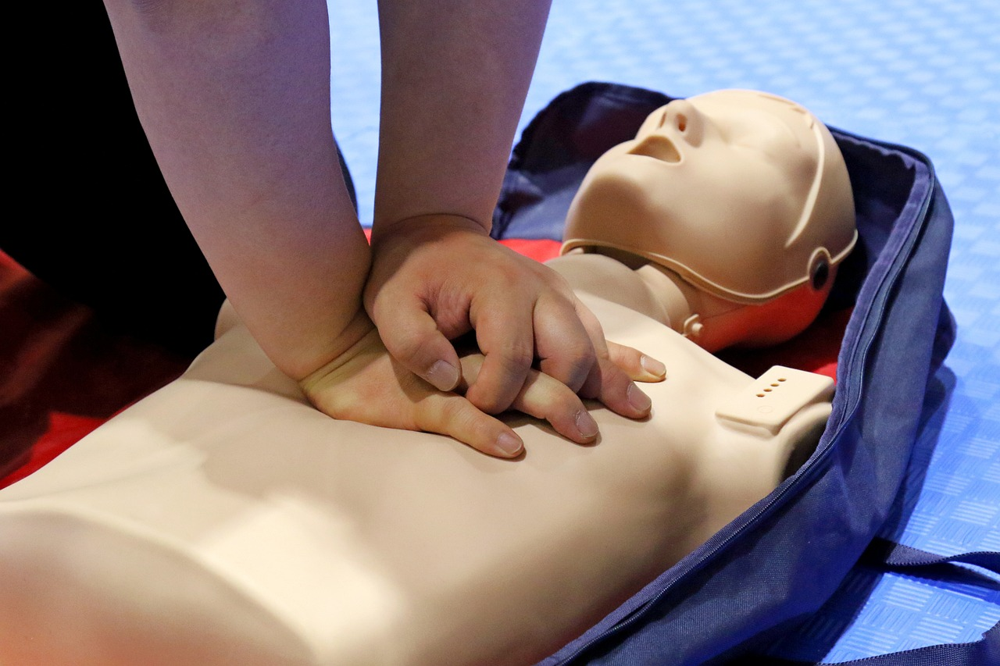
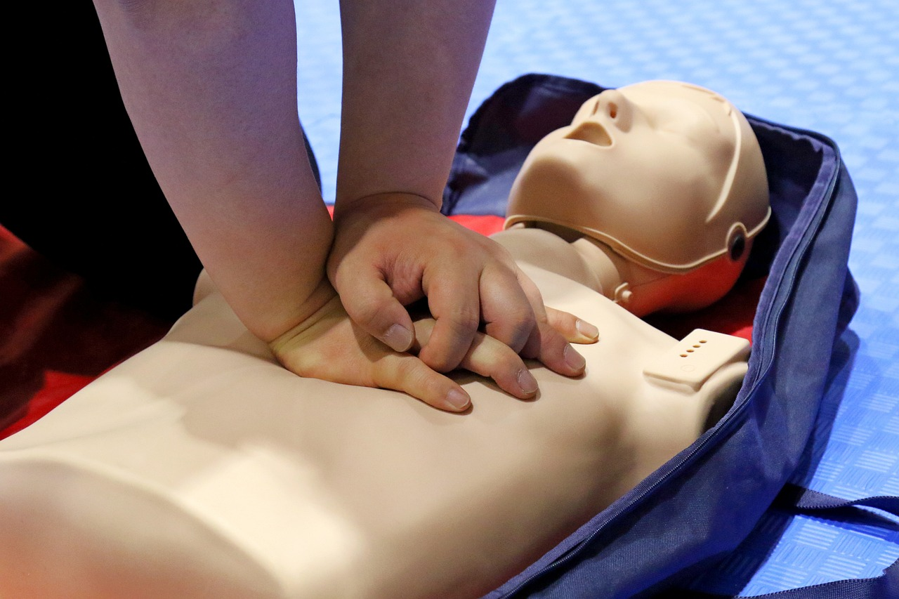

Cuidados en casa

 



Algunos datos importantes

El cuidado de nuestros mayores
Desde la mirada de la enfermería, el cuidado de nuestros seres queridos mayores en casa implica brindarles atención integral, asegurando su seguridad, promoviendo su autonomía y velando por su bienestar físico y emocional. Esto incluye administrar medicamentos, realizar curaciones, fomentar una alimentación saludable, estimular el ejercicio y mantener una comunicación constante con el médico tratante. Además, es fundamental ofrecerles compañía y afecto para que se sientan queridos y apoyados en esta etapa de sus vidas..

Como posicionar al bebe para una correcta lactancia
"La lactancia materna y el cuidado enfermero: una combinación poderosa para promover la salud y el bienestar de los recién nacidos y sus madres. Descubre cómo estos dos pilares fundamentales de la enfermería pueden mejorar la calidad de vida de tu familia."

Como tomar correctamente la presión
Tomar correctamente la presión arterial desde la perspectiva de la enfermería implica seguir ciertos pasos clave. En primer lugar, es importante asegurarse de que el paciente esté en reposo, sentado y relajado durante al menos 5 minutos antes de tomar la medida. Luego, se coloca el brazalete en el brazo desnudo a la altura del corazón y se ajusta adecuadamente. Se utiliza un esfigmomanómetro para inflar el brazalete hasta un nivel superior al esperado y luego se va liberando lentamente mientras se escucha el pulso. Los valores sistólico y diastólico se registran correctamente. Es fundamental realizar varias mediciones para obtener un promedio más preciso.